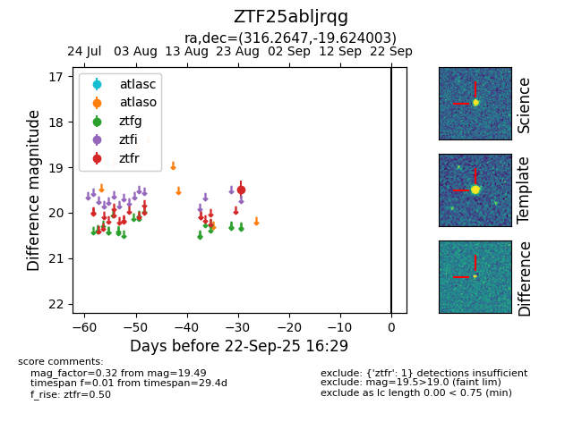

FINK: ZTF25abljrqg
Lasair: ZTF25abljrqg
ALeRCE: ZTF25abljrqg
ZTF25abljrqg (ztf,fink)
equatorial (ra, dec) = (316.2647,-19.62400)
galactic (l, b) = (28.3920,-37.92785)

last ztfr=19.49
1 ztfr detections